Claude Code 上下文管理图解：Compact 压缩机制怎么实现？
大家好，我是小林。
最近有位林友跟我说，他去面试某大厂 AI 岗，被面试官追问了不少 Claude Code 源码相关的问题。
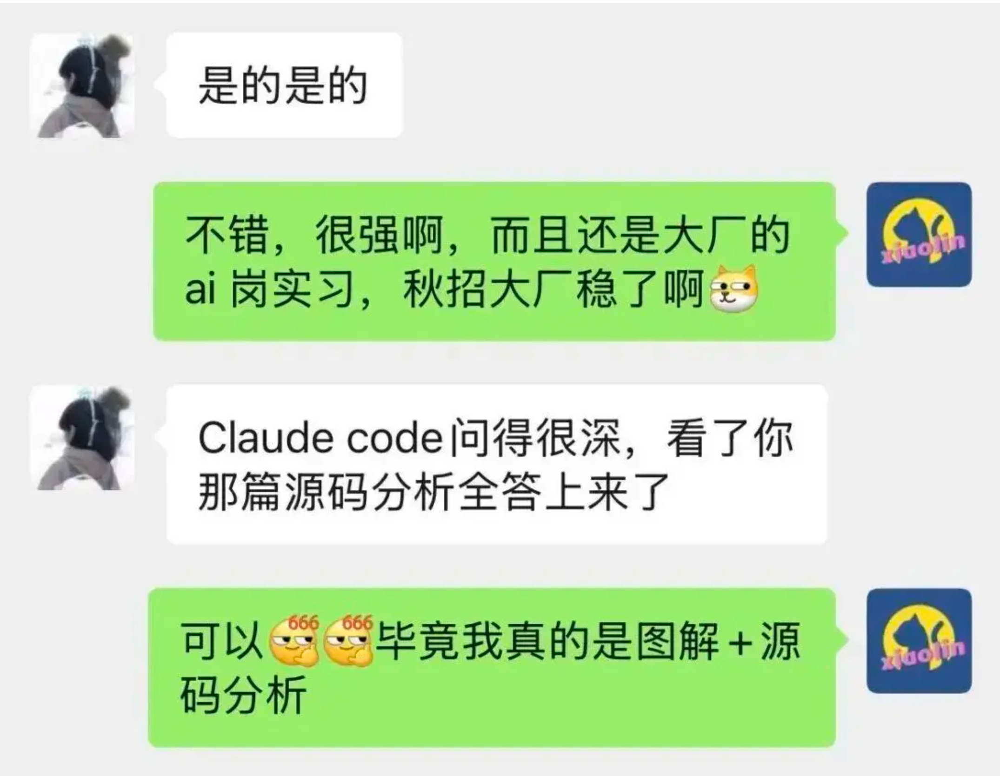
还好他面试前刚好啃过我公众号那两篇 Claude Code 源码分析的文章，几乎都答上来了，顺利拿下了 offer。
他说的那两篇分别是：
基本把 Claude Code 比较核心的原理都剖析了一波，也收获了很多读者的好评。
然后又有读者跟我反馈，想让我再深入聊聊 「Claude Code 的上下文窗口是怎么管理的？」
原因很简单，因为他面试被深入问到了，这可以说是 agent 开发最常考察的知识点了。
只要简历上做过 agent 项目」，面试官几乎都会追问一句：你这个 agent 项目的上下文是怎么管的？
那 Claude Code 这个被业内认证「最强 agent 范本」之一的产品，到底是怎么做的？
我把 Claude Code 的 compact（压缩） 相关的源码翻了好几遍，越看越觉得有意思。别急，这篇文章我会一层一层拆给你看。
读完之后，你不光能答出这道面试题，说不定还能把这套思路借鉴到你自己的 agent 项目里。
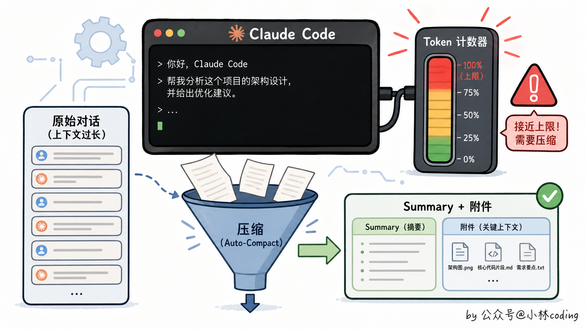
我会按这几个层次展开：
- 什么是上下文窗口？为什么 agent 跑起来分分钟爆窗口？
- 业界常见的上下文方案，为什么不够看？
- Claude Code 的 5 层压缩金字塔
- Auto-Compact 的整体思路
- 什么时候触发压缩？
- 压什么、留什么、丢什么？
- 摘要 prompt 是怎么设计的？
- 压完之后怎么接续对话？
- 这道面试题该怎么答？
如果你能看到最后，下次面试官再问到这道题，至少能让对方眼前一亮。
一、先聊聊上下文窗口
聊 Claude Code 怎么管之前，我们先退一步，把「上下文窗口」这个概念本身搞清楚。如果你已经很熟了，可以跳过这一节直接看第二节。
上下文窗口是个啥？
大模型跟人不一样，它没有真正的「记忆」。每次你问它一个问题，本质上都是「从头看一遍」：把 system prompt、所有历史对话、当前问题，一股脑塞进去，然后生成回复。
塞进去的这堆东西，加起来的总长度有个上限，这个上限就叫「上下文窗口」。单位是 token，你可以粗略理解成「字」，但中英文有差别（中文一个字往往占 1 到 2 个 token，英文一个单词平均算 1 个 token）。
打个比方，上下文窗口就像是模型的「工作台面」。你能放多少东西在这张桌子上，模型就能看见多少东西。桌子的大小是固定的，超出去的东西，要么放不下，要么得挤掉一些已有的。
那这张桌子现在有多大？看模型。当前主流模型的窗口大小大概是这样：
- GPT-4 早期版本：8k token（约 1 万多字）
- Claude 3.5 Sonnet：200k token（约 30 万字）
- Claude Opus 4.7 的 1M 版本：1M token（约 200 万字）
- 部分 Gemini 模型甚至能到 2M
200 万字听起来很大对吧？拿来塞一整套《三体》三部曲都绰绰有余。但你真去做 agent，会发现这张桌子还是不够大。
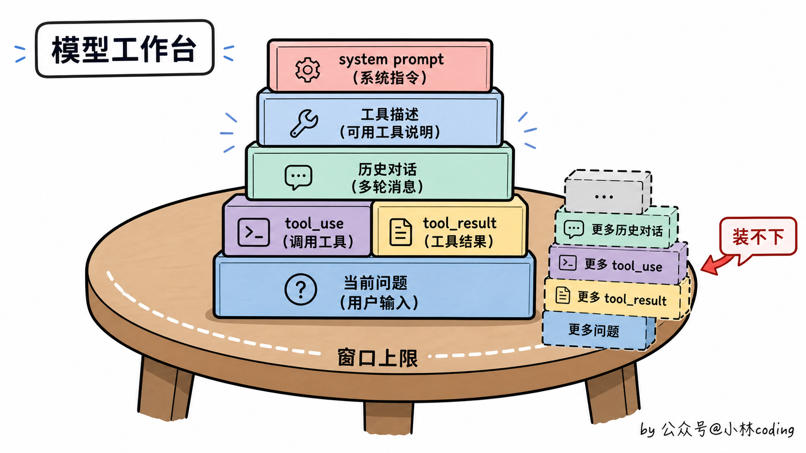
模型工作台示意图
为什么 agent 更费窗口？
普通聊天为啥不太担心窗口？因为聊天就是「你一句我一句」，每轮可能也就几十到几百个 token。一个 200k 的窗口能撑上千轮对话。
但 agent 就不一样了，窗口压力来自三处叠加。
第一处，开局就是大头。一个 agent 开局，光是 system prompt + 工具描述 + CLAUDE.md 这些「固定开支」，就要塞进 5k 到 10k token。你还没开始干活，桌子就已经占了一角。
第二处，工具调用会在上下文里留下两条记录，而且持续累积。这一点很多人不知道，是上下文爆得快的元凶之一。普通聊天里模型回一句话，上下文就多一条文本。但工具调用不一样：模型先发一条 tool_use（告诉系统我要调什么工具、参数是啥），工具跑完再回一条 tool_result（把结果塞回上下文），这两条都会留下来。
举个例子，agent 要读 a.py 这个文件，对话里会变成这样：
- 第一条
tool_use: Read("a.py")，相当于模型说「我要调 Read 工具读 a.py」 - 第二条
tool_result: <a.py 的完整内容>，是系统把文件读完、把内容返回给模型
真正吃窗口的不是「两条 vs 一条」这个数量差，而是 tool_result 里经常塞着几千 token 的文件内容或命令输出，并且会一直留在后续每一轮里被反复加载。调一次工具只是一次开销，但它留下的内容会在接下来每一轮被重新计费一次。
第三处，大文件 Read 杀伤力巨大。agent 经常要读源代码文件，一个稍微大点的源文件几千 token 起步，一万 token 也很常见。读三五个文件，桌子上就堆满了。
算笔账你就有概念了：一个稍微复杂点的编码 agent，开局 8k 加上读 5 个平均 5k 的文件等于 33k，再加上对话和中间的 grep、edit 工具调用，跑个十几轮，几万 token 没了。如果是那种持续好几个小时的长任务，分分钟逼近 200k 的天花板。
加大窗口能解决吗？
你可能会说，那模型厂商不是在卷长上下文吗？卷到 1M、2M，问题不就自然解决了？
这个想法有道理，但治标不治本，三个硬伤摆在那儿。
第一个硬伤是钱。上下文越长，单次推理的 token 消耗就越大，账单也跟着膨胀。一个长跑的 agent，如果不做上下文管理，token 消耗会按几何级数往上涨。
第二个硬伤是慢。Attention 机制的计算复杂度跟序列长度是平方相关的，上下文越长，模型生成第一个 token 的延迟（业内叫 TTFT，也就是「从你按下回车到看到第一个字」的那段等待）就越高。一个 5000 token 的对话 1 秒返回，一个 150k 的对话可能要等十几秒。
第三个硬伤最致命，叫做 Lost in the Middle。这是个挺有名的现象：当上下文非常长时，大模型对首尾信息记得清楚，对中间段则记忆模糊。你以为塞进去就是塞进去了？不一定，中间那一大段，模型可能瞟一眼就过去了。这是注意力机制的固有特性，跟窗口多大没关系，所以哪怕窗口扩到 1 亿 token，中间段的信息照样看不清楚。
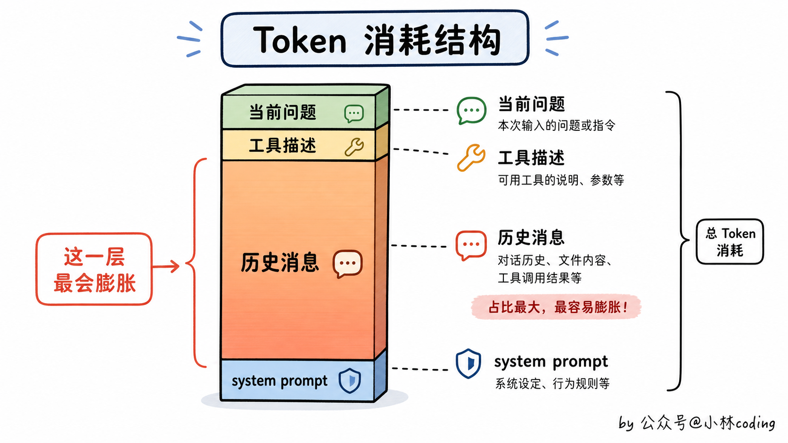
token 消耗结构图
所以你看，光靠模型厂商扩窗口救不了 agent。要救，必须 agent 自己主动管理上下文。
管得好的 agent 能聊上千轮、跑通复杂任务，管不好的 agent 几十轮就开始胡言乱语、忘东忘西。
那行业里现在都怎么管？有几个常见方案，我们先看看它们都长啥样，再看看 Claude Code 凭什么能在面试中说服面试官。
二、常见方案为什么不够看？
聊这个之前，我先做个铺垫。你去 Github 上扒一扒开源的 agent 框架，会发现上下文管理的方案大概就那么几类，我们一个一个看。
方案一：滑动窗口
这是最常见的一种。逻辑也最直白：你设个阈值，比如对话超过 50 轮、或者总 token 超过 100k，就开始砍。从最老的消息开始往后砍，保留最新的若干条。
听起来不错对吧？又简单又快。
但你想啊，agent 跟普通聊天机器人不一样。一个 agent 跑复杂任务，最关键的决策往往就在最开始。比如用户开局说了一句「我们这次的目标是 A，注意一定要避免 B」，这种全局性指令，你把它砍掉了，后面 agent 就开始干 B 那种被禁止的事，等于完全失控。
而且工具调用是有「上下文依赖」的。你前面用 Read 读了一个文件，把文件内容存进了 tool_result。后面 agent 引用了这个内容做决策。如果你把那个 tool_result 砍了，后面那段引用就变成无源之水，模型一脸懵：我之前说的是基于啥来着？
所以滑动窗口本质是「用遗忘换续航」。对话能聊下去，但 agent 的脑子被打了。
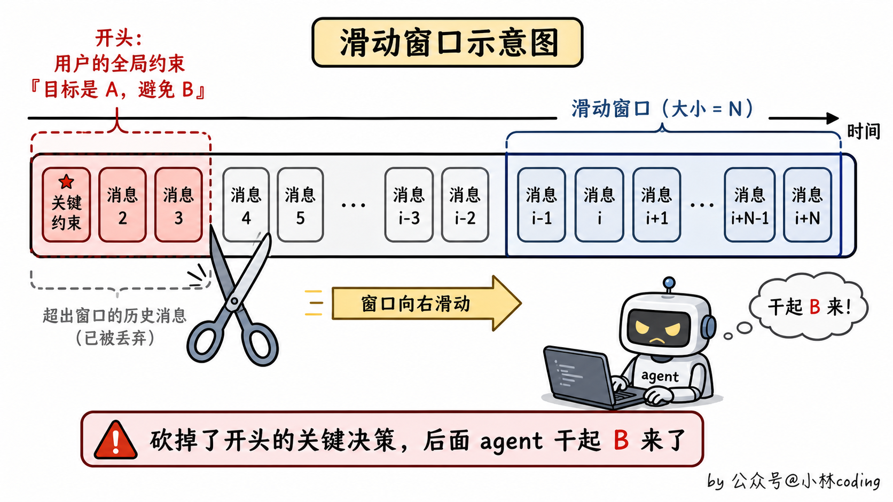
滑动窗口示意图
方案二：每 N 轮做摘要
这是稍微进阶一点的方案。每过 10 轮、或者每过 50k token，触发一次摘要：把这一段对话扔给一个小模型，让它生成一段话总结，然后用这段总结替换原来的消息。
这个思路对不对？对。比滑动窗口好多了，至少信息没全丢。但你仔细一品，问题也不少。
第一，触发时机太死板。10 轮可能是个非常重要的关键节点，你这一刀切下去，模型把那 10 轮压缩成一段话，关键细节就丢了。5 轮可能根本啥都没干，你也去压一遍，反而把好好的对话切碎了。
第二，摘要的粒度也粗。一段话能装多少信息？对话里那些细微的状态、错误的修复过程、用户中途改的需求，全压成几句话，agent 接着干的时候很容易丢失这些细节。
所以「每 N 轮摘要」是一种「机械主义」的方案，看似在管理上下文，其实是在按节奏粗暴破坏对话连贯性。
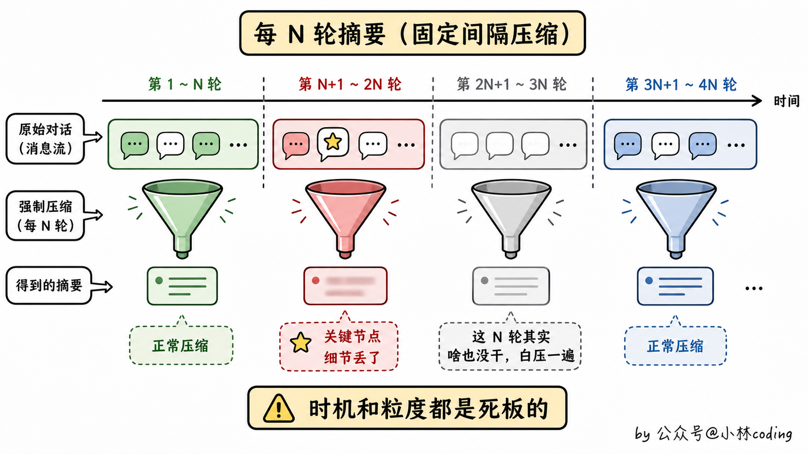
每 N 轮摘要示意图
方案三：向量召回历史
这个方案就更「高大上」了。逻辑是这样：把所有历史消息切成片，丢到向量数据库里。每次 agent 要回答新问题，先用问题去召回 top-k 个最相关的历史片段，然后塞进上下文。
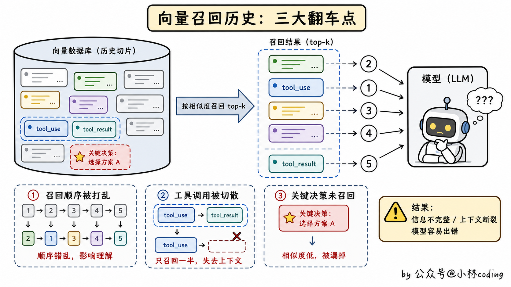
向量召回历史示意图
这套思路在 RAG 系统里用得很普遍，所以很多人想当然觉得，agent 上下文也可以这么管。
但你拿到 agent 场景来用，会立刻翻车。
第一个问题，agent 的上下文是强时序依赖的。你说「先做 A 再做 B」，向量召回不管顺序，它按相似度召回，可能把 B 召回上来，A 落在了 top-k 外面。模型一看：「哦原来要做 B」，先做 B 去了，整个执行顺序就乱了。
第二个问题，工具调用是「成对」出现的，tool_use 和 tool_result 必须一起出现。向量切片可能把这两个切开了，留个 tool_use 在召回结果里，tool_result 没拿到，模型就疑惑：我之前调了这个工具结果呢？
第三个问题更要命：召回 top-k 一定会漏掉东西。agent 的关键决策点可能就藏在某一条不起眼的消息里，相似度不一定高，但它就是关键。一旦漏掉，整个对话的逻辑就断了。
所以向量召回这套，搞 RAG 检索文档行，搞 agent 上下文不行。这是两个完全不同的场景。
你看，这三种方案各有各的硬伤。面试官听完，要么觉得你「就这？」，要么觉得你「想得太简单了」。
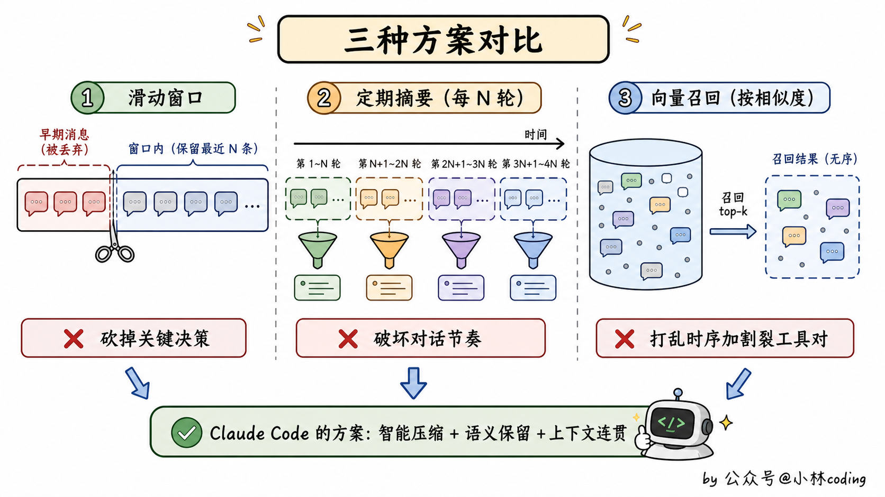
三种方案对比示意图
那 Claude Code 怎么干？
它走的是完全不同的路子：不是「保留加召回」，是「重写整段对话」。听着是不是有点夸张？别急，我们一步一步拆。
三、Claude Code 的 5 层压缩金字塔
聊细节之前，必须先把全景给你，免得只见一棵树忘了整片森林。
Claude Code 的上下文管理不是一招制敌，而是一套从轻到重的 5 层金字塔。它的设计原则一句话讲清：能不压就不压，必须压的时候从最轻的手段开始。
5 层从底（轻）到顶（重）大概是这样。
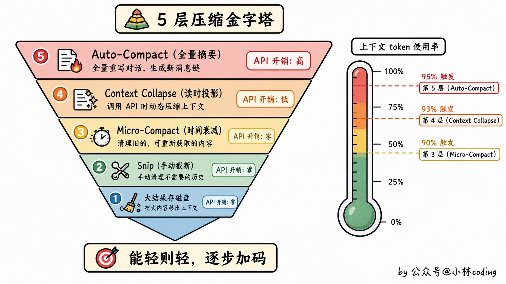
5 层压缩金字塔示意图
第 1 层：大结果存磁盘
agent 调一个 Read 工具读了 10MB 的日志？这种「单工具结果超 50KB」的情况会直接被拦截：完整内容写到磁盘文件，消息里只留一个 2KB 的预览。
完整内容没丢，模型需要时可以再次 Read 拿回来。零 API 开销。同一条消息里所有工具结果加起来还有个 200KB 总量上限，超了就挑大的存磁盘。
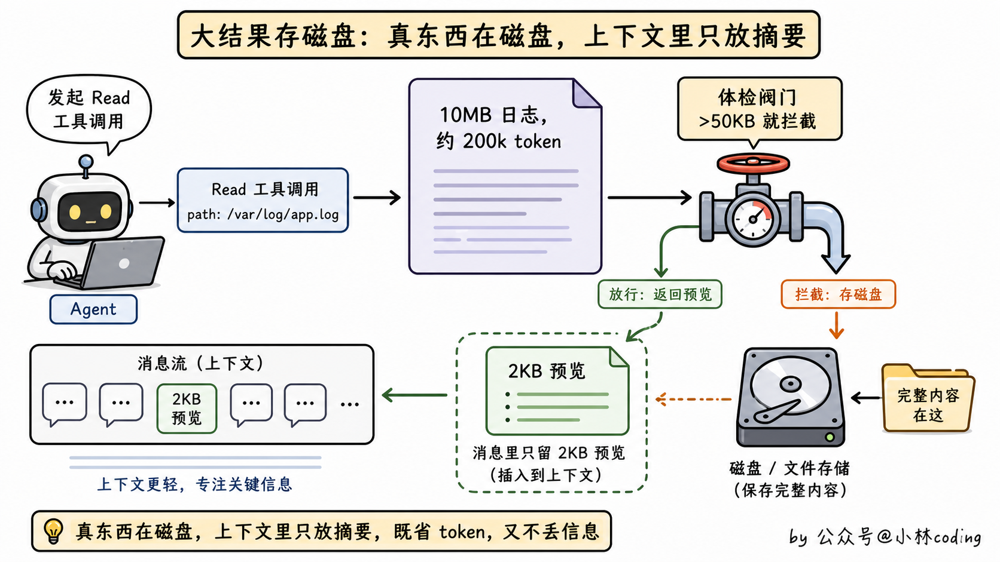
大结果存磁盘示意图
第 2 层：Snip 砍掉远古消息
对话开头那几轮探索性提问可能已经完全没用了。Snip 这一层就负责把它们删掉，再插入一条「这之前的内容已被清理」的边界标记。
不过这里有个容易被一句话带过的细节得说清楚：到底删哪些远古消息，不是写死的规则，而是模型在正常回答的那一回合里，顺手用一个专门的 snip 工具，按消息 id 把没用的那几条标记出来，真正的删除动作才在本地完成。
所以它跟第 5 层 Auto-Compact 不一样。Auto-Compact 会专门「另发一次摘要请求」，Snip 没有这种独立调用，只是搭着模型本来就要跑的那一回合做的，顶多多注入一小段提示、给每条消息加个 id 标签，多花一点 token。换句话说它不是字面意义上的「零 API、纯本地」，但确实是一层很轻的开销。Snip 释放出来的 token 数还会传给第 5 层 Auto-Compact，避免两层重复压缩。
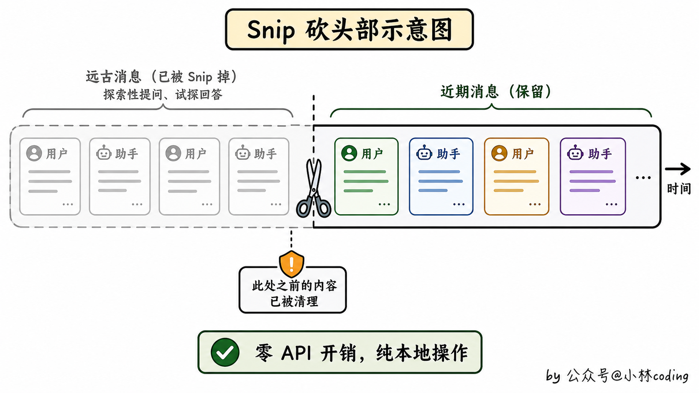
Snip 砍头部示意图
第 3 层：Micro-Compact 时间衰减
距离上一次 API 调用超过约 60 分钟时触发。逻辑是：超过这个时间，大模型 API 端的 Prompt Cache 大概率已经过期了，那不如顺手清掉旧的工具结果。
具体做法：把「可重新获取」的工具结果（Read / Bash / Grep / Glob / WebSearch / Edit / Write）清空，只保留最近 5 个。子 agent 输出、Task 状态这类「不可重复」的结果绝不裁剪。
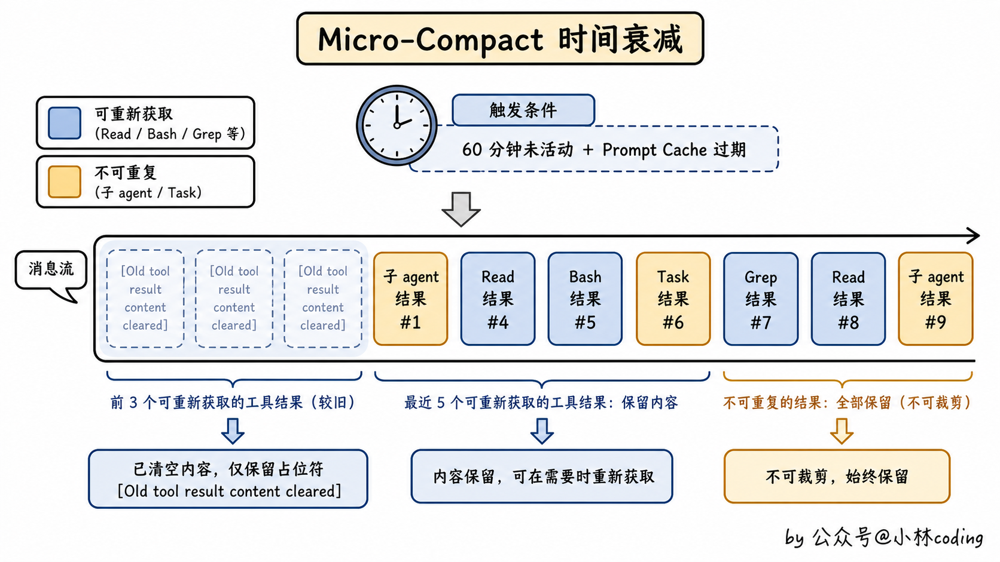
Micro-Compact 时间衰减示意图
第 4 层：Context Collapse 读时投影
上下文达到 90% 时触发，95% 时升级。这一层最巧妙：不修改原始消息，只在调用 API 的那一刻动态计算一个压缩视图给模型。
原对话历史在本地完整保留，模型那边看到的是压缩版。这种「写时不动、读时投影」的思路在很多数据库里也常见。
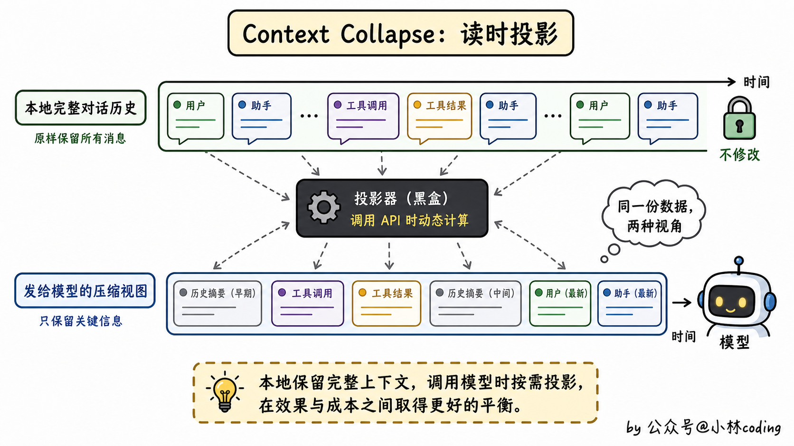
Context Collapse 读时投影示意图
第 5 层：Auto-Compact 全量摘要
最重的兜底。上下文逼近窗口上限时触发（具体阈值是从原始窗口里留出约 33K 缓冲，由 20K 摘要输出预留加 13K 额外冗余组成，下文第五节细拆），把整段对话全送进摘要器重写一份，配套做文件恢复、缓存清理、消息重组。
这一层是真正意义上的「全量重写」，代价最高（要一次 API 调用）但效果也最强。
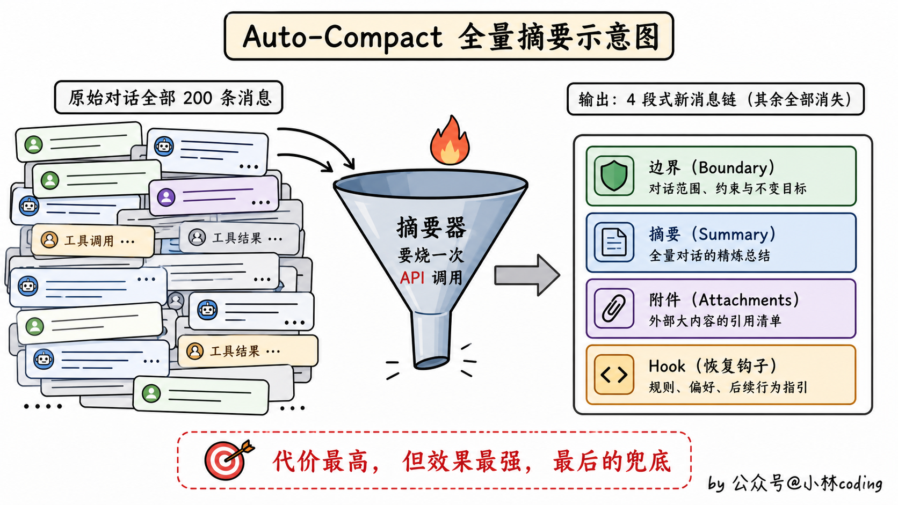
Auto-Compact 全量摘要示意图
为什么要分 5 层
这种「从轻到重」的设计有个隐藏的好处：绝大部分场景根本走不到最顶层。前面几层都在替后面「减负」，大文件没塞进上下文，Snip 就不会触发；Snip 把空间释放出来了，后面的重型压缩自然也不需要跑。
但这里有个点必须澄清，免得你翻源码时犯迷糊：第 4 层 Context Collapse 和第 5 层 Auto-Compact 不是「叠着用」的关系，而是二选一。Claude Code 内部有个开关来决定这次走哪一套，同一时刻只有一个在管事。源码里写得很直白，一旦 Context Collapse 启用，Auto-Compact 的触发判断会被直接短路掉，token 烧得再多也不会触发它。
为什么不让两个一起上？因为它们的触发线咬得太近。Context Collapse 在 90% 开始动作、95% 兜底，Auto-Compact 正好卡在中间的 93%。两个同时跑，Auto-Compact 会抢在前面把活干完，反手把 Context Collapse 正准备细粒度保存的上下文一锅端掉。与其让它们打架，不如用一个开关明确分工。
配图意见：Context Collapse 与 Auto-Compact「二选一」示意图。画一个开关分别指向两条触发线（Context Collapse 的 90%/95% 对 Auto-Compact 的 93%），同一时刻只有一条高亮、另一条灰掉，重点表达「互斥」而不是「叠加」。
还有个细节能帮你少走弯路：Context Collapse 目前还是 Anthropic 内部灰度的实验特性，对外发布的版本会把这部分代码整个裁掉。所以你现在翻公开源码，大概率只能看到 Auto-Compact 这一条线，这也是本文把它当兜底主力来拆的原因。
5 层里有 2 层是纯本地、完全零 API 开销（大结果存磁盘和 Micro-Compact），Snip 那层也只是搭着模型正常回合顺手标记、不另发请求，同样很轻。真正贵的是最顶上那套全量重写，而且只有在前面几层都压不动的极端情况下才会动用。
这篇文章我们只聚焦最顶上的第 5 层 Auto-Compact，因为它是面试官最爱拷打的、设计最精妙的、也是最有面试加分价值的。前 4 层我在之前那篇《学习 Claude Code 源码》里讲过完整全景，没看过的可以翻一下。
接下来 5 节，全部是 Auto-Compact 的深度拆解。
四、Auto-Compact 的整体思路
Auto-Compact 作为金字塔最顶层的兜底机制，核心就三件事。
第一件，绝对阈值触发。不按轮数、不按百分比，按 token 数距离窗口上限的固定缓冲。
第二件，全量重写对话。这个最反直觉：所有历史消息，不分新旧，全部送进摘要器重新写一份。
第三件，关键信息走另外的恢复通道。文件内容、记忆文件（也就是 CLAUDE.md 这类）、异步任务的状态，这些东西不靠摘要保住，靠「重新注入」。
这里顺便插一句「异步任务」是啥：Claude Code 支持主 agent 派几个后台子 agent 同时干活，比如让一个去搜文档、另一个去跑测试。这种正在跑的子任务状态也属于关键信息，压缩时必须保住，不然主 agent 醒来后会不知道子任务进展到哪了。
光这么说估计还是有点抽象，打个比方你立马就懂了。
好比你是一家公司的老板，每个季度要做总结。一种做法是「把所有的会议记录都翻一遍」。这种方法你能记住一堆细节，但脑子里乱成一锅粥。
Auto-Compact 的做法是另一种：会议记录全部归档进档案室（这部分等于丢了，对话里看不到了）；桌面上换上一份新写的「精华版季度纪要」（这是摘要）；员工手册（也就是 CLAUDE.md）该挂哪挂哪不动，下次开会还能翻（下一轮重新加载）；最近用过的几份关键文档（最近 read 的文件），放到桌面随手翻的位置（重新注入为附件）。
这套做法的精髓在哪？在于它承认对话历史是会过时的。过去的细节虽然有价值，但 95% 都不需要原样保留，重要的是「我的目标是什么、我做到哪一步了、犯过哪些错、下一步该干嘛」这种结构化的状态。
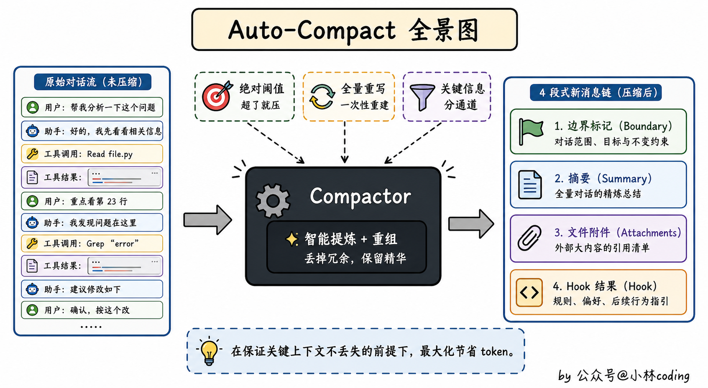
Auto-Compact 全景图
OK，全景有了。下面四节，把这三件事一件件拆开看，先看触发时机。
五、什么时候触发压缩？
如果让你来设计你会怎么定？常见思路无非这几种：按对话轮数（每 50 轮压一次）、按 token 数比例（占满窗口 80% 就压）、按时间间隔（每隔 30 分钟压一次）。
这些方案听起来都挺合理。但 Claude Code 都没用，它用的是一个更工程化的思路：距离上限的固定缓冲。
阈值是怎么算的？
直接看源码：
export const AUTOCOMPACT_BUFFER_TOKENS = 13_000
export function getAutoCompactThreshold(model: string): number {
const effectiveContextWindow = getEffectiveContextWindowSize(model)
return effectiveContextWindow - AUTOCOMPACT_BUFFER_TOKENS
}
它的触发线是这么算的：拿到模型的「有效上下文窗口」，再减去一个固定值 13k，得到的就是触发阈值。token 数一旦超过这条线，就开始压。
注意这里有个容易被绕进去的地方：「有效上下文窗口」并不等于模型原始的窗口大小。在算它的时候，Claude Code 已经先从原始窗口里抠掉了一块，专门留给摘要自己的输出用。这块预留藏在另一个常量里：
// Based on p99.99 of compact summary output being 17,387 tokens.
const MAX_OUTPUT_TOKENS_FOR_SUMMARY = 20_000
上面这两段都在 autoCompact 那个文件里。看注释你就明白了：摘要任务实际输出长度的 p99.99 分位是 17,387 token，Anthropic 真的去跑了大规模数据统计，把分布画出来，发现哪怕到 99.99% 这个极端分位，摘要输出也就 17.3k 左右。然后向上取整、再留一点安全冗余，凑成一个整 20k，作为「给摘要输出预留的位置」。
所以这里其实是两层缓冲叠在一起，别搞混了：
第一层是这 20k，从原始窗口里减掉，确保压缩时摘要那一大段输出有地方写得下，这一层才是 p99.99=17.3k 那个数据推出来的。
第二层才是前面代码里的 13k，它是在「原始窗口减掉 20k」之后，再额外往回缩的一道安全线，让压缩稍微提前一点触发、别贴着边界跑。源码注释并没有给这 13k 挂上 p99.99 的依据，它就是一道独立的二层保护。
换句话说，真正离原始窗口的距离是 20k + 13k ≈ 33k，而不是单看到的 13k。如果你只盯着 13k 还拿它去跟 17.3k 比，会觉得「留的冗余怎么比实际输出还小」，那是因为漏看了前面那 20k。能想到这一层、反推出「留冗余的数应该比 17.3k 大」的读者，思路是很对的。
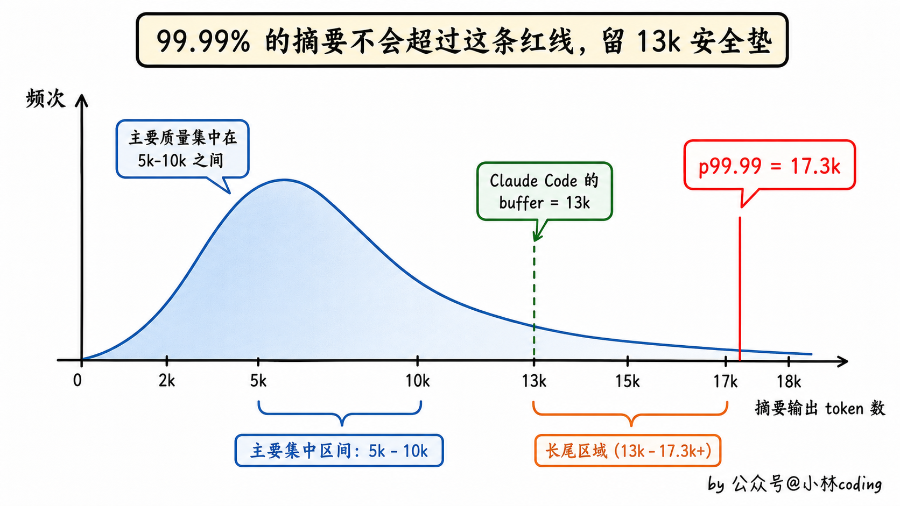
摘要输出长度的 p99.99 分布示意图
这个细节看着不起眼，但很显工程师味儿。绝对值阈值的好处是可预测：不管模型窗口未来扩到 500k 还是 1M，触发线永远是「上限减掉这固定的 20k + 13k」，不会因为窗口变大就跟着膨胀。如果用 80% 这种比例，模型窗口越大，剩余预算就越大，但摘要任务实际需要的预算其实没怎么变，那就是浪费。
手动和自动触发的区别
讲到这儿你应该注意到一件事：触发的逻辑是自动判断的。但 Claude Code 还提供了一个手动入口：/compact 命令。
那么手动和自动，走的是不是同一套逻辑？
答案有意思：核心压缩函数是同一个，但传入的参数不一样。
手动模式：你可以传一段 customInstructions（直译就是「自定义指令」），告诉摘要器「这次压缩，请特别关注 XXX 方面」。比如你正在调一个特定 bug，希望摘要的时候把这个 bug 的上下文重点保留。
自动模式：不接受用户指令，而且会偷偷打开一个开关叫 suppressFollowUpQuestions（直译就是「禁止生成后续提问」）。这个开关的意思是：摘要里禁止生成「需要进一步确认」类的问题。为啥要这么干？因为自动压缩通常发生在 agent 正在干活的时候，你不想压完了对话被一个新问题打断节奏。
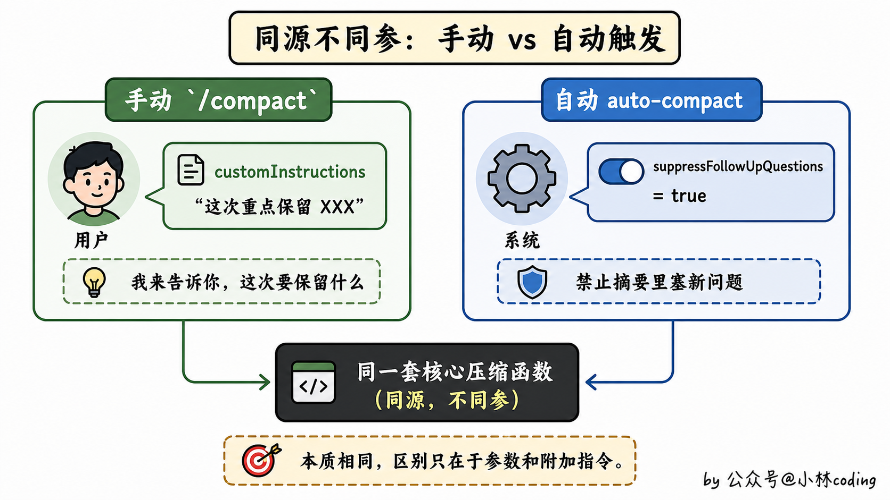
手动 vs 自动触发对比图
熔断和递归守卫
自动模式还多了一个安全机制：circuit breaker（电路断路器）。如果 auto-compact 连续失败 3 次，系统就停止重试。
这个机制其实是踩坑踩出来的。源码注释里讲，曾经有 1000 多个会话因为反复触发压缩失败、不停重试，把 API 账单当烟花放。Anthropic 工程师肯定开过紧急复盘会，最后定下来连续失败 3 次就熔断。这种带着血味儿的设计，才是从生产环境里活下来的。
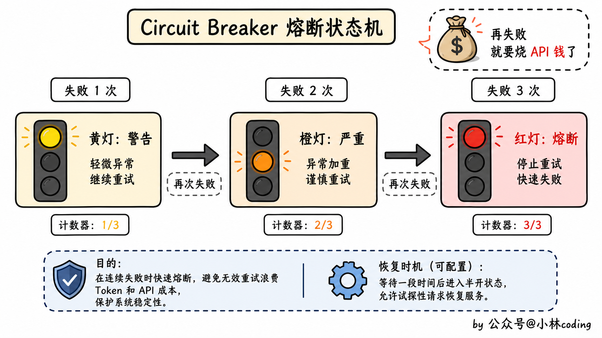
circuit breaker 熔断状态机
还有一个细节也挺有意思，叫递归守卫。Claude Code 在跑摘要任务的时候，本质上也是开了一个子 agent 去调模型生成摘要。这个子 agent 自己也是要消耗 token 的，那它会不会因为消耗多了又触发 auto-compact，进入死循环？
不会。源码里就这么一句判断：
if (querySource === 'session_memory' || querySource === 'compact') {
return false
}
querySource 是当前查询的「来源标签」。压缩任务跑起来时会被标成 compact，会话记忆任务会被标成 session_memory。一旦判断来源是这两种之一，直接 return false 不再触发压缩。短短三行，就把无限递归这个坑堵死了。
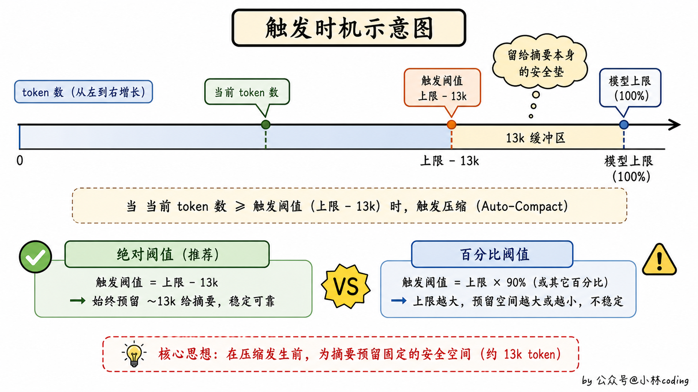
触发时机示意图
聊完触发，我们看下一个最反直觉的设计：全量重写。压缩的时候，到底压什么？留什么？
六、压什么、留什么、丢什么？
来到第二个核心设计：压缩的取舍。
全量重写整段对话
这里换个角度问一下：如果让你来设计压缩机制，遇到一段 200 轮的对话，你会怎么处理？
绝大多数人的直觉是：保留最近 20 轮（最相关的），把前面那 180 轮压成一段摘要塞进去。这也是大多数 agent 框架的做法。
但 Claude Code 不是这么干的。它的做法非常激进：所有 200 轮，全部送进摘要器，重新写一份。
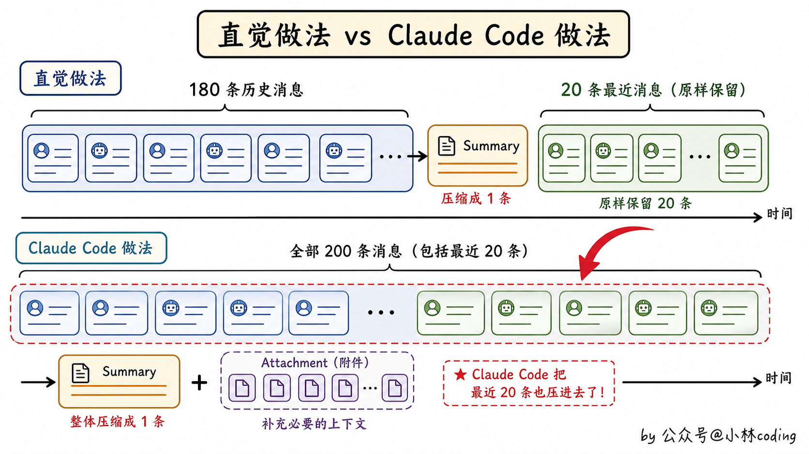
「直觉做法 vs Claude Code 做法」对比图
第一眼看到这个设计你大概率会愣一下：最近的对话也不保留？那 agent 不是丢了眼前正在做的事吗？
不过转念一想还真有道理。还记得第一节讲的 Lost in the Middle 吗？就算你保留最近 20 轮，模型对中间几轮其实也看不清楚。与其留一堆半模糊的信息，不如全部压成结构化的精华，让模型一眼就能看清。
别急，最近的对话也有另外的恢复通道，等会儿讲。先看压缩之后的对话长啥样：
export function buildPostCompactMessages(result: CompactionResult): Message[] {
return [
result.boundaryMarker, // 压缩边界标记
...result.summaryMessages, // 摘要消息
...result.attachments, // 文件、技能、计划等附件
...result.hookResults, // hook 执行结果
]
}
读一下你就明白了。压缩之后的整个对话历史，被重写成了四段式结构。
第一段，边界标记。一个特殊消息，记录这次压缩是自动还是手动、压缩前 token 是多少、最后一条消息的 ID 是啥。等于打个时间戳。
第二段，摘要消息。这就是大头，前面 200 轮全部被压缩进这里。
第三段，附件。包括最近读过的文件、当前的计划文件、激活的技能、正在运行的异步任务状态等等。这就是「另外的恢复通道」。
第四段，hook 结果。用户配置的 hooks 在压缩时也会执行，结果一并注入。
所以你看，最近的对话不是没保留，是换了一种形式保留。最关键的几个上下文（文件状态、任务状态），单独走附件通道；语义层面的进度，走摘要；操作层面的最近行为，靠模型的常识去推断。
这套设计的妙处在于：它承认对话的不同信息有不同的「半衰期」。
举两组具体例子你就懂了。
像「用户想给登录接口加验证码」「之前的技术方案改成了 JWT」「我们决定用 Redis 做缓存」这种语义信息，压成一两句话基本不损失，摘要器可以总结。
像「a.py 第 42 行有个 bug 在改」「文件已经读到第 100 行」「子任务 X 跑完了，输出在 result.txt」这种状态信息，差一个字 agent 就接不上了，必须原样恢复。
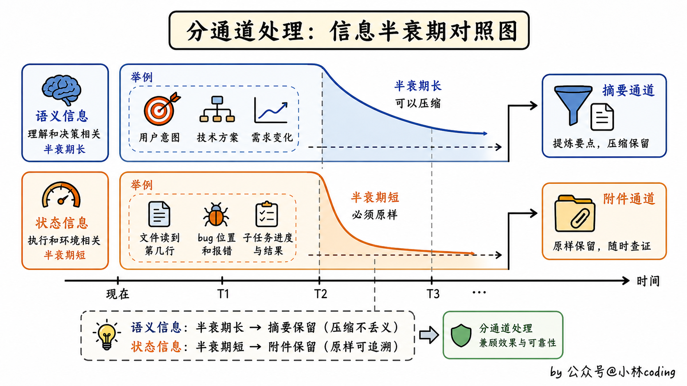
信息半衰期对照图
语义信息走摘要、状态信息走附件，各管各的，效率最高。
记住一个画面：原来 200 条消息的对话，压缩后只剩 4 段东西（边界标记 + 摘要 + 附件 + hook），其他都不见了。
不过你可能立马有个新疑问：200 轮消息全送进摘要器，摘要器自己不会被撑爆吗？这就引出了 Claude Code 的下一手，先做预处理。
microcompact 预处理
Auto-Compact 真要跑之前，还会先做一步预处理，叫 microcompact。
什么意思？就是先把对话里那些占大头的「工具调用结果」清空，只留一个元数据占位符。涉及的工具包括 Read、Bash、Grep、Glob、WebFetch、WebSearch、Edit、Write 这些。这些工具的输出动辄几千几万 token，先把内容清掉，对话瞬间瘦一圈。
然后再把瘦完之后的对话送进摘要器，摘要器的负担也小很多，生成的摘要质量也更高。
顺便插一句澄清：microcompact 本身也是第 3 节金字塔里的第 3 层独立机制，会按时间衰减（距离上次 API 调用超过 60 分钟）单独触发，并不是只在 Auto-Compact 时才跑。本文为了叙事流畅，重点讲它在 Auto-Compact 流程里扮演的「预处理」角色，但你要知道它有自己的独立生命周期。
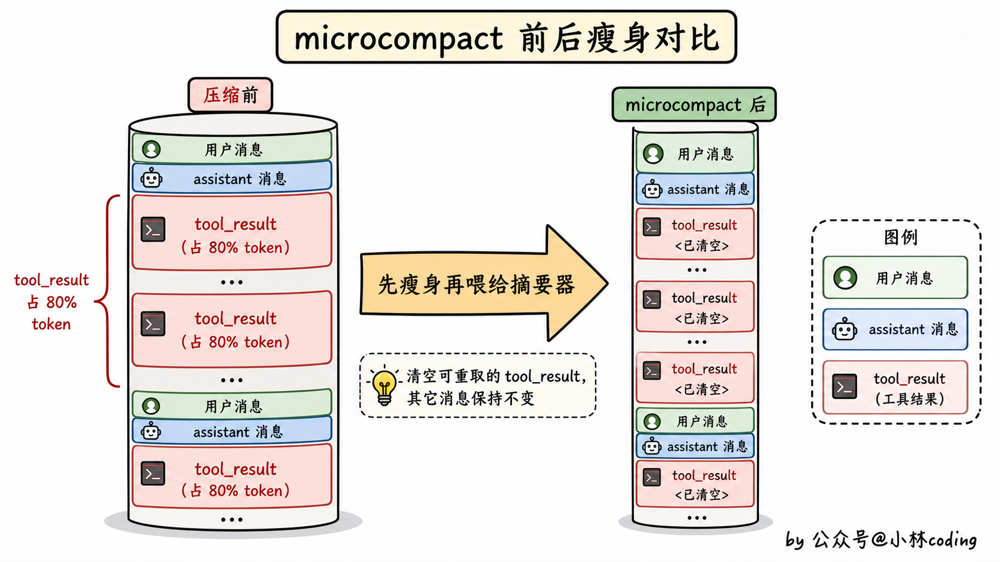
microcompact 前后瘦身对比图
文件恢复：5 个、5K、50K
那有人会问：内容都清空了，agent 后面怎么继续工作？比如最近读的那个文件，内容都没了，agent 怎么知道里面是啥？
这就要讲 Claude Code 的「文件恢复」策略了：
export const POST_COMPACT_MAX_TOKENS_PER_FILE = 5_000
export const POST_COMPACT_TOKEN_BUDGET = 50_000
export const POST_COMPACT_MAX_FILES_TO_RESTORE = 5
三个常量，看着不起眼，其实是工程化的精华：压缩之后，最多重新加载 5 个文件；每个文件最多塞 5k token；总预算不超过 50k token。
那怎么选这 5 个文件？按「最近活跃度」排，最近被 Read 过的优先。
这个设计实际上是把「最近文件」这个概念量化了。不是模糊地说「保留最近的」，而是用 5 个文件、5k 每文件、50k 总额这三个参数，把它工程化定义死。这样不管对话多复杂，文件恢复的开销都是可控的。
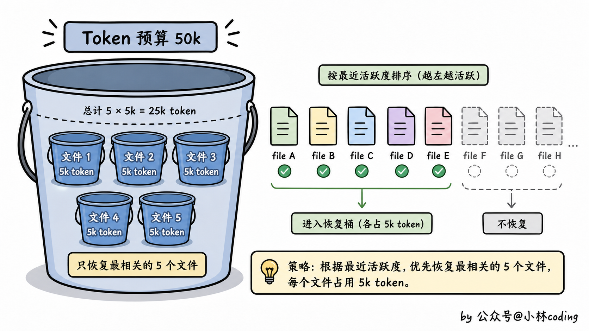
文件恢复策略示意图
CLAUDE.md 不进摘要
讲完文件，看另一个值得讲的东西：记忆文件，比如 CLAUDE.md。
你可能会猜：CLAUDE.md 这种永久性的指令，压缩之后会被塞进附件里吧？
错。Claude Code 这里做了一个很反直觉的决策：CLAUDE.md 不会被注入到压缩后的消息里。
那它怎么生效？答案是：通过「清空缓存」让它在下一轮对话自动重新加载。
逻辑是这样的：Claude Code 内部有个叫 getUserContext 的缓存（用来存「用户级上下文」，CLAUDE.md 的内容就放在这）。每次对话开始，会先查这个缓存。压缩的时候，系统把这个缓存清掉。这样下一轮对话发起的时候，Claude Code 发现缓存空了，就会从磁盘重新读 CLAUDE.md。
为什么这么干？因为 CLAUDE.md 是「永久存活」的上下文，每一轮都会自动重新加载，不需要塞到压缩后的消息里占地方。这种「全局指令」和「当下对话」是两套机制管理的，互不干扰。
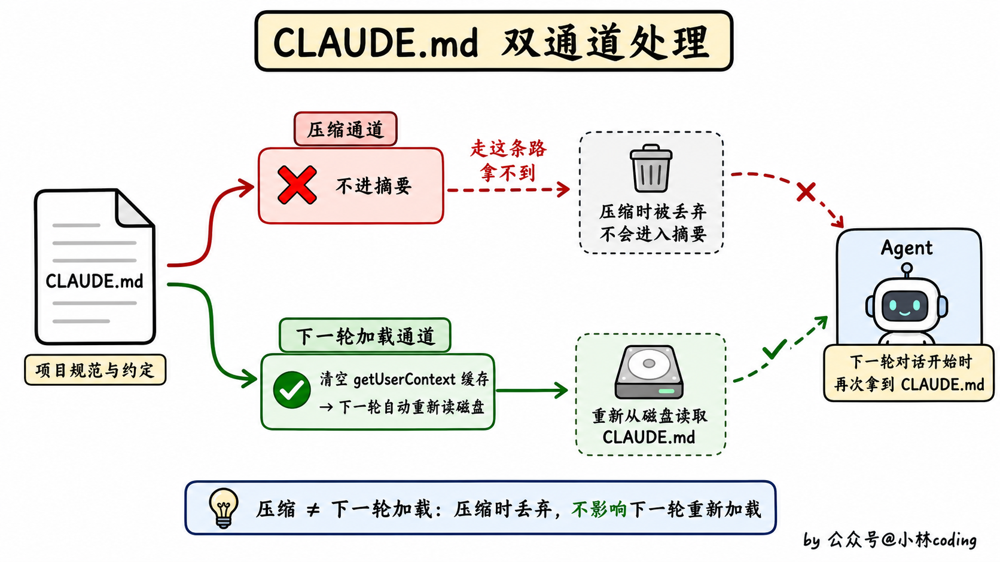
CLAUDE.md 双通道处理示意图
system prompt 和异步任务
还有一个角色得提一下：system prompt。
system prompt 完全不参与压缩。压缩之后，会用一个叫 buildEffectiveSystemPrompt 的方法（直译就是「构建有效的 system prompt」）重新构造一份新的，注入最新的工具列表、最新的权限设置、最新的 MCP server 列表。等于压缩完顺便把「操作手册」刷一遍。这样如果你在对话中途加了一个新工具，压缩之后 agent 就能立刻用上。
最后还有一类东西要保住：异步任务的状态。
如果你的 agent 起了几个子 agent 在后台跑任务，压缩的时候不能把这些任务状态丢了。Claude Code 把这些任务的状态（正在跑、跑完了、出错了）作为附件重新注入，确保压缩之后主 agent 依然能看到子任务的进度。
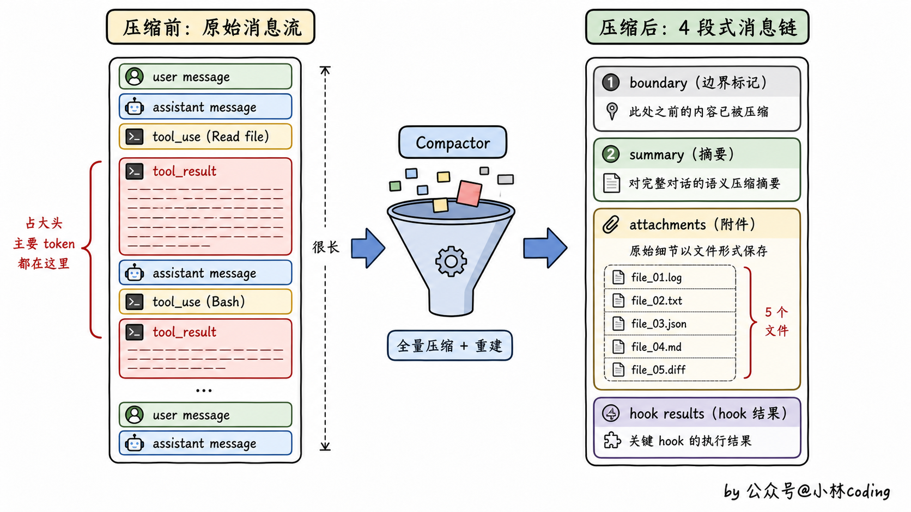
压缩前后消息链对比图
看到这儿你应该明白：Claude Code 的取舍逻辑，本质是信息分类管理。语义信息进摘要、状态信息走附件、永久信息靠缓存清理重新加载、操作配置每次重建。各司其职。
整节读下来如果只让你记一句话，那就是：不同信息走不同通道，谁也别碰谁的地盘。
下一个问题，最有料的部分来了：摘要器收到一大堆消息之后，到底是怎么压缩的？它的 prompt 是怎么写的？
七、摘要 prompt 是怎么设计的？
终于来到最有料的环节。
很多人觉得，让大模型写个摘要嘛，prompt 不就是「请总结一下以下对话」嘛？告诉你结论：Claude Code 的摘要 prompt 长达两百多行，光是「禁止工具调用」这一条警告就在里面重复了两次。听到这儿你大概能猜到，坑不少。
一点一点拆。
防呆设计：禁止工具调用
打开 prompt 文件的第一眼，你会看到这么一段：
CRITICAL: Respond with TEXT ONLY. Do NOT call any tools.
- Do NOT use Read, Bash, Grep, Glob, Edit, Write, or ANY other tool.
- Tool calls will be REJECTED and will waste your only turn.
- Your entire response must be plain text.
翻译一下：「严正警告，只能返回文本，不许调用任何工具。Read、Bash、Grep 这些都不行。你调用了我们会拒绝，你只有这一次机会，调了就废了」。
为什么要这么夹着喊？因为做摘要的本质是让模型只生成文字，把对话压缩成一段总结。但是模型很容易看到对话里提到「这个文件之前 Read 过」就自己手痒去 Read 一下，或者看到一个 bug 就想去 Bash 跑一下。
这种行为在普通对话里很合理（agent 就是要主动调工具嘛），但在做摘要时是大忌：要它总结历史，不是要它做新动作。一旦它去调工具了，这次摘要就废了，得重新来。
源码注释里讲了这是早期 Sonnet 4.6 留下的坑：那个版本的模型经常无视一次警告，所以工程师们干脆「前后包夹」，在 prompt 的开头讲一遍，结尾再讲一遍。
你能想象那个工程师改完 prompt、跑测试一看模型又偷偷调了 Read 的表情吗？干脆前后各喊一遍：「我说了不许调工具」「我再说一遍不许调工具」。这种细节读起来挺有画面感的，再厉害的模型也有自己的「小动作」，prompt 工程很多时候就是在跟模型的惯性做拉扯。
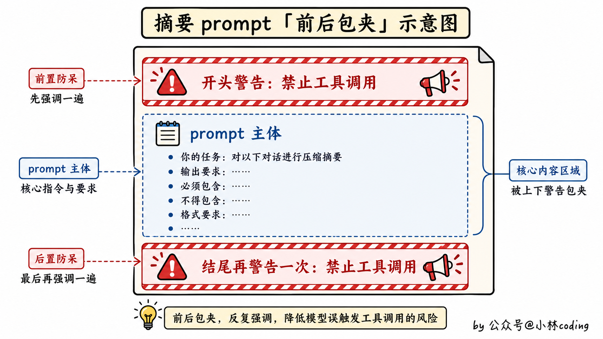
摘要 prompt「前后包夹」示意图
输出格式：XML + 9 部分清单
讲完防呆设计，看正经的输出要求。
Claude Code 要求摘要的输出长这样：
<analysis>
[模型的推理草稿，分析对话哪些重要]
</analysis>
<summary>
[结构化的摘要，按 9 个清单分块]
</summary>
<analysis> 块是「草稿区」，让模型先想清楚再写。这块最终会被剥离掉，不进入压缩后的对话。它的存在纯粹是为了让模型有个「思考的空间」，写出来的摘要质量更高。
<summary> 块才是真正进入对话的内容。
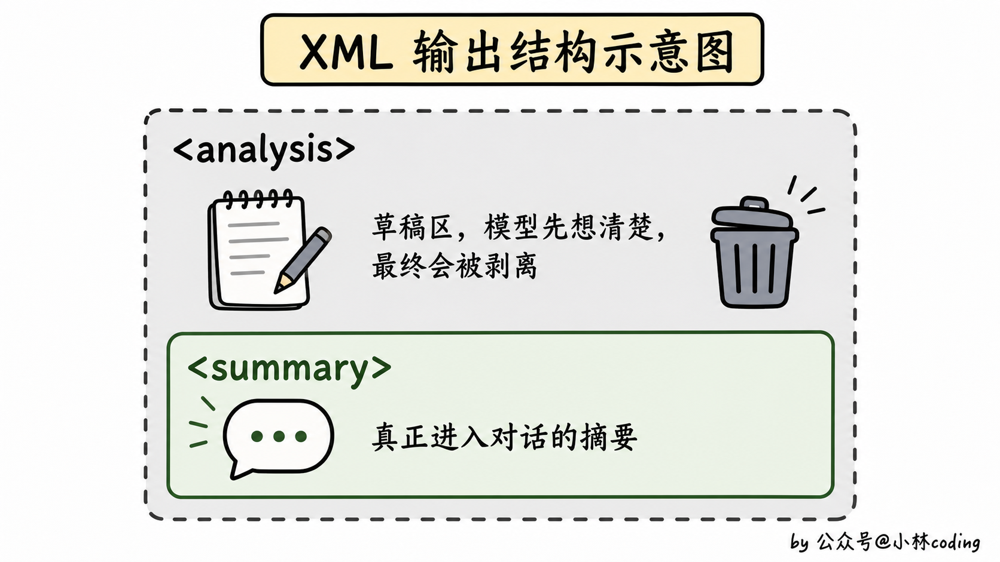
XML 输出结构示意图
这块必须包含 9 个固定章节：
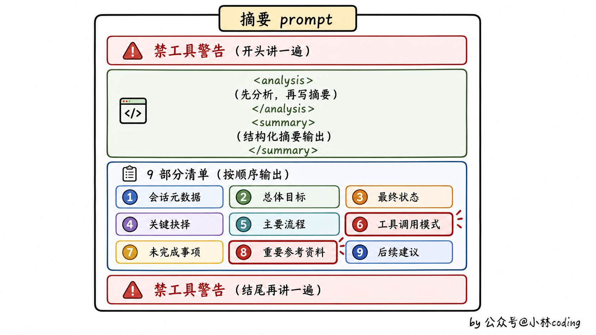
摘要 prompt 结构示意图
- Primary Request and Intent（主要请求和意图）
- Key Technical Concepts（关键技术概念）
- Files and Code Sections（涉及的文件和代码段）
- Errors and fixes（碰到的错误和修复方式）
- Problem Solving（解决的问题）
- All user messages（所有用户消息）
- Pending Tasks（待办任务）
- Current Work（当前正在做的事）
- Optional Next Step（下一步建议）
这 9 项里其他几项都好理解，重点拎出来讲两项：第 6 项和第 8 项，这俩才是设计的灵魂。
第 6 项：枚举所有用户消息
光看名字你可能以为是「把所有用户消息复制一遍」？不是。它的意思是：摘要里必须把所有不是 tool result 的用户消息列出来。
为什么这么强调？因为 agent 是为人类服务的。用户在对话中可能在第 30 轮的时候改了一次需求、在第 80 轮的时候提了一个新约束、在第 150 轮的时候说「之前那个方向放弃吧」。这些信号是任务方向变化的关键，摘要里丢了一个，agent 接下来可能就走偏了。
所以这一项不是「概括」，是「枚举」，一个不能落。摘要器宁可篇幅长一点，也要把用户的所有发言都列清楚。
第 8 项：最细颗粒度的当前进度
这一项的要求是：用最细的颗粒度描述 agent 当前正在做什么。
注意是「最细」。不是「正在调试」，而是「正在调试登录模块的 token 刷新逻辑，刚发现 cookie 过期判断有 bug，正准备改 auth.ts 文件的 refreshToken 函数」。
为什么要这么细？想象一下压缩之后下一轮对话，agent 收到摘要后第一件事就是问自己：「我刚才做到哪了？」。摘要里这一项越细，agent 接续工作就越流畅。粗了的话，agent 会陷入「我好像在调试什么东西，但具体是啥？」的迷茫，可能会重新探索一遍上下文，浪费 token 和时间。
所以你看，9 个清单不是凑数。每一项都有它要解决的问题：意图不丢、技术方向不丢、文件状态不丢、错误教训不丢、用户每句话不丢、待办不丢、当前进度不丢。
剩下的 7 项也都各司其职，比如 Errors and fixes 让 agent 不会重复踩同一个坑，Pending Tasks 让 agent 知道还有哪些事没干完。
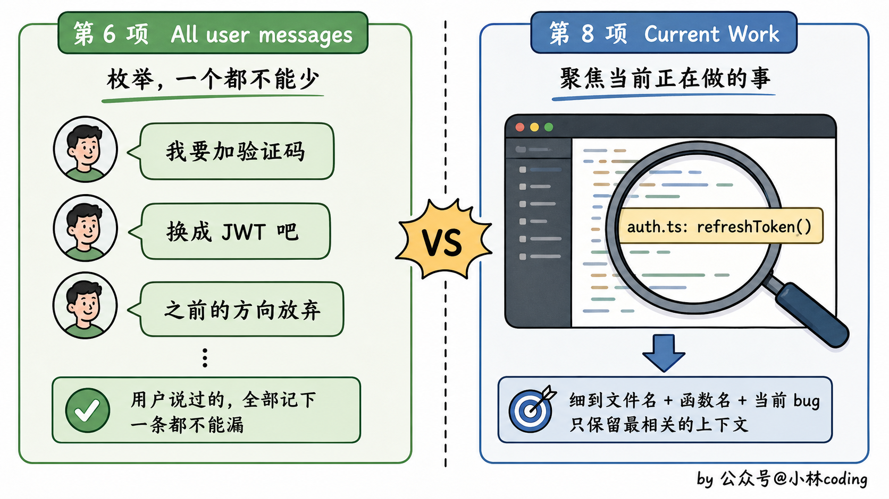
第 6 项 vs 第 8 项对比图
摘要用什么模型？
最后一个值得讲的细节：你以为摘要任务会用一个便宜的小模型？
错。Claude Code 用的是当前对话的同一个模型（也就是主 agent 用的那个，比如 Opus 4 或者 Sonnet 4）。
为什么不省钱用个小的？两个原因。
第一，摘要质量要保证。便宜的小模型生成的摘要丢东西多，下一轮 agent 就接不上。摘要本身是 agent 接续工作的「灵魂文件」，省这点钱不值。
第二，Prompt Cache 复用。这里插一句解释，prompt cache 是大模型 API 的一个能力：如果你这次请求和上次请求的开头部分（比如 system prompt、工具描述）是一样的，这部分会被缓存住，下次只算一次钱、推理也更快。Claude Code 的主对话本来就在用 prompt cache，压缩用同一个模型，能复用 system prompt 那部分的 cache，省下来的钱比换小模型省的还多。
聊完压缩，看最后一个机制问题：压完之后，对话怎么接得上？
八、压完之后怎么接续对话？
压缩本身讲完了，但还有一个工程问题：摘要生成完了，怎么把它塞回去，让对话无缝接下来？
这个细节其实挺关键。如果接得不好，模型下一轮会一脸懵：「我前面好像聊了好多东西，怎么突然就一段摘要？我是不是该重头来一次？」
压缩流水线五步走
Claude Code 是这么处理的，整个流水线大概是这么走：
第一步，把当前所有消息送进摘要器，生成摘要文本。
第二步，清空各种缓存，包括 readFileState（文件状态缓存）、loadedNestedMemoryPaths（嵌套记忆文件路径缓存）、getUserContext（用户上下文缓存）。这一步保证下一轮对话所有的状态都从干净的起点开始。
第三步，并发生成各种附件：最近的文件、异步 agent 的状态、技能配置等等。注意是并发，不是顺序，这能省一些时间。
第四步，调用前面讲过的 buildPostCompactMessages 把所有东西组装成新的消息链。
最后一步，新的消息链替换掉旧的，对话继续。
整个过程对外是透明的。用户那边看到的就是一句轻飘飘的提示「Compacted」，然后 agent 接着干活。
旧消息真的丢了吗？
那旧的消息哪去了？真的丢了。
除非你打开了 Kairos 模式（一种 transcript 备份机制），那种情况下旧消息会写到本地的一个 transcript 文件里，可以事后回查。但在对话本身里面，旧消息是回不来的，压缩是一次性的、破坏性的操作。
听起来挺暴力对吧？但其实是个明智的设计。如果允许「回滚」，整个对话状态就会很复杂，要维护「压缩前/压缩后」两套消息，token 也省不下来。一刀切，反而干净。
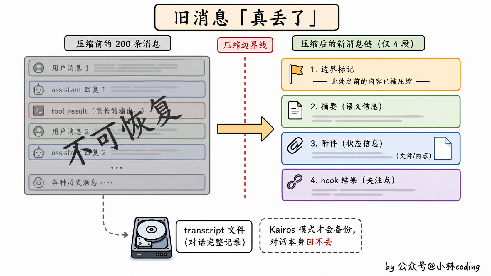
旧消息「真丢了」示意图
让模型无缝接活的小心思
不过 Claude Code 留了一个小心思：摘要的开头会被包装成这样一句话：
「本会话是从之前一次因上下文耗尽而中断的对话延续过来的。以下摘要概述了之前的对话内容。」
这句话很重要。它告诉模型一件事：你不是从头开始的，你是接着干。模型看到这句话，就不会傻乎乎地问「请问您想做什么」，而是直接顺着摘要的「Current Work」往下接活。
而且摘要的末尾还会带一个 transcript 文件路径。意思是说：「如果你需要查之前对话里的某个具体代码片段或者细节，可以读这个文件」。这给了 agent 一个「翻底牌」的兜底通道。
最后讲一个看着小但效果好的开关，叫 suppressFollowUpQuestions（前面也提过，中文直译就是「禁止生成后续提问」）。
这个开关只在 auto-compact 时打开。它的作用是：禁止摘要器在 Current Work 那部分生成「需要进一步确认」类的问题。
为什么？想象一下场景：用户正在让 agent 干一个长任务，token 烧着烧着触发了自动压缩。如果摘要里塞了一个问题：「请问您是希望优先 A 还是 B？」，那 agent 下一轮就会卡在这个问题上等用户回答，整个任务流被打断了。
而手动 /compact 的时候，这个开关是关闭的，因为用户主动触发压缩，本来就是个干预动作，模型问个问题确认一下也没毛病。
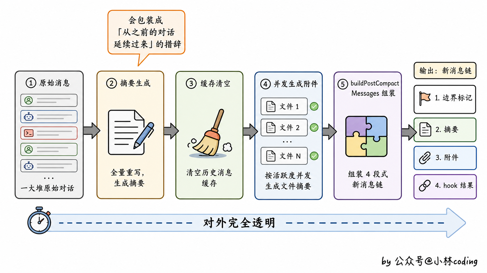
压缩接力流程图
到这儿，Claude Code 的整套压缩机制就拆完了。
九、面试该怎么答？
原理讲完了，回到文章开头那道面试题。下面这套节奏建议你背一下，下次面试官再问「Claude Code 的上下文窗口是怎么管理的？」，照着答就行。
你可以先一句话亮观点：「Claude Code 用的不是滑动窗口、定期摘要、向量召回那一类常见方案，而是一种叫『全量重写加分通道恢复』的工程化思路。」
这一句话本身就比 90% 的候选人讲得有结构感了。
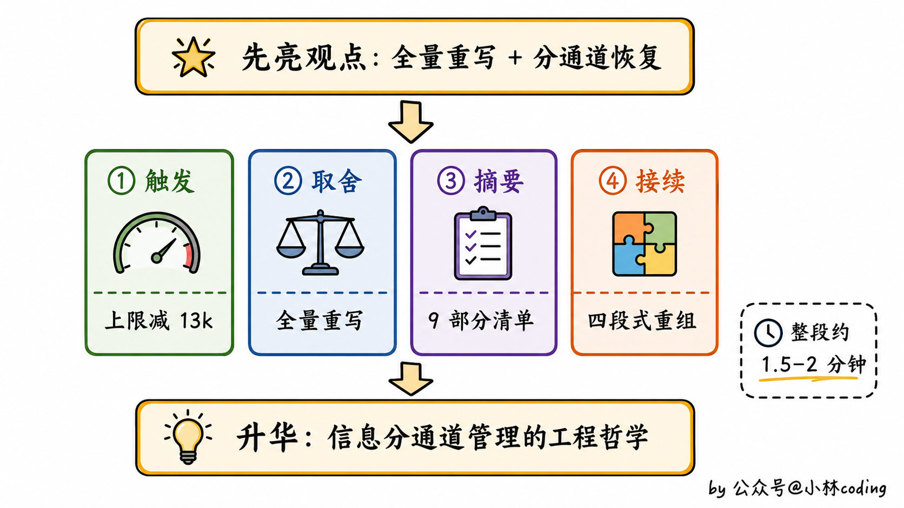
面试话术四层结构卡片图
接下来分四层铺细节，节奏要稳。
第一层，触发时机。用的是绝对 token 阈值，公式是「有效上下文窗口减去 13k 缓冲」。这里有个细节最能体现你真翻过源码：所谓「有效上下文窗口」本身就已经先从原始窗口里抠掉了约 20k，专门留给摘要自己的输出，而这 20k 才是基于摘要任务 p99.99 输出长度（实测 17,387 token）向上取整加冗余得来的；13k 是在这之上再加的一道独立缓冲。所以离原始窗口的距离其实是 20k 加 13k 约 33k。这一层讲清楚，面试官就知道你不是临时抱佛脚。
第二层，取舍逻辑。反直觉的点是它不保留最近 N 条，而是把所有历史消息一刀切全部送进摘要器重写一份。关键的状态信息单独走「附件通道」恢复，比如最近读过的 5 个文件（每个最多 5k token，总预算 50k）、异步任务状态、当前计划文件。CLAUDE.md 这种永久指令则不进摘要，而是通过清空 getUserContext 缓存让它在下一轮自动重新加载。
第三层，摘要 prompt 设计。用 9 部分结构化清单约束输出，重点强调「所有用户消息」必须枚举不能落、「当前正在做的事」要精确到文件和函数名。摘要用的是当前对话的同一个模型，不省钱换小模型，目的是保证质量，顺便复用 prompt cache。
第四层，接续机制。压缩之后会清空文件状态缓存、并发生成附件、用 buildPostCompactMessages 把新消息链组装好。摘要外面包一句「本会话是从之前一次因上下文耗尽而中断的对话延续过来的」，让模型知道自己是接力不是从头开始。自动触发时还会打开 suppressFollowUpQuestions 开关，避免摘要里塞新问题打断当前任务。
讲完这四层，最后用一句话收口：「Claude Code 这套设计反映的不是『省 token』的小聪明，而是『信息分通道管理』的工程哲学。」这句话留给面试官细品，整段回答就稳了。
整段回答下来大概一分半到两分钟，节奏从「为什么这么做」聊到「具体怎么做」，再升华到设计哲学。面试官想追问任意一层你都能展开（那约 33k 缓冲是怎么拆成 20k 加 13k 的、9 部分清单是哪 9 部分、circuit breaker 怎么防止烧钱），都是文章里讲过的细节，拿来就能用。
写在最后
回头看 Claude Code 的这套压缩机制，最戳人的是一句话：上下文管理不是「省 token」，是「保信息结构」。
很多 agent 项目把上下文压缩当成一个性能优化问题来做，逻辑是「窗口要爆了，赶紧砍点东西」。
但 Claude Code 不是这么想的，它把上下文管理当成 agent 的「灵魂工程」：意图、进度、错误教训、待办、用户每一句话，这些才是 agent 能接续工作的本钱。token 数只是表面，保住这些结构化信息才是核心。
这种工程思维其实挺值得学。做 agent 时太容易陷入「这个 token 多了、那个 prompt 长了」的细节优化，反而忘了思考「我的 agent 到底依赖哪些上下文信息才能干好活」这个本质问题。
Claude Code 用一套精细的分层管理告诉你答案：不同信息有不同的半衰期，要分别管理。
最后留一个开放问题给你思考：
当未来上下文窗口扩到 1 亿 token，是否还需要 compaction？
我的预测是：仍然需要。
理由是 Lost in the Middle 现象不是上下文窗口大小的问题，是注意力机制的固有特性。窗口再大，中间段的信息照样会被模型「看不清楚」。所以无论窗口怎么膨胀，主动管理信息结构这件事永远不会过时。
Anthropic 这套机制对所有做 agent 的同学来说，都是教科书级的范本。
希望这篇文章看完，能让你下次面试时把整套机制讲明白，让面试官眼前一亮。
我们下篇见。